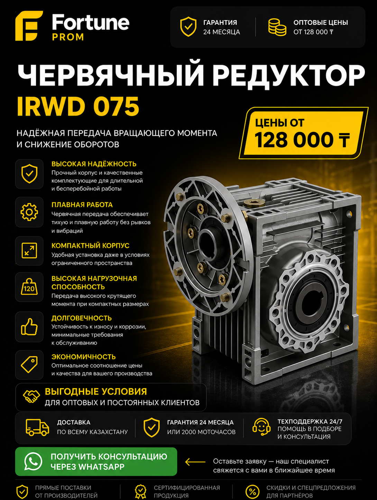

Он рассчитан на более серьёзные режимы и даёт больше запаса при тяжёлой эксплуатации.
Надёжная передача крутящего момента и снижение оборотов для более тяжёлых производственных режимов, конвейеров, смесителей, шнеков и приводов с повышенной нагрузкой.

Если на объекте используется двигатель большей мощности, нагрузка тяжёлая, пуски происходят часто, а линия работает по длительному циклу, типоразмер IRWD 075 обычно оказывается безопаснее и практичнее. Компании переходят на него при проектировании конвейеров, шнеков, смесителей, узлов транспортировки и оборудования, где важен запас по моменту. С точки зрения B2B-закупки это решение нередко дешевле в долгую, чем выбор младшего редуктора впритык к его пределу.
IRWD 075 также актуален, когда нужно сократить риск перегрева, повысить стабильность работы и заложить дополнительный ресурс. При подборе сравнивают мощность двигателя, передаточное число, режим работы и фактическую нагрузку. Если вы уже рассматриваете купить IRWD 063 в Казахстане, но есть сомнения по запасу, стоит параллельно проверить и 075 размер. Это особенно полезно для новых запусков, где простои обходятся дорого.
Fortune PROM поставляет IRWD 075 с документами, оптовыми условиями и консультацией. Мы помогаем выбрать оптимальный вариант, сверяем совместимость с мотором и при необходимости подбираем близкий по задаче аналог NMRV 063 или предлагаем сравнение в разделе сравнение редукторов. Для инженерных и снабженческих отделов это удобнее, чем подбирать редуктор по одному размеру без проверки нагрузки.
Он рассчитан на более серьёзные режимы и даёт больше запаса при тяжёлой эксплуатации.
Для конвейеров, шнеков, смесителей, транспортирующих и производственных узлов с повышенной нагрузкой.
Да, отправьте мощность, обороты, тип нагрузки и город поставки.